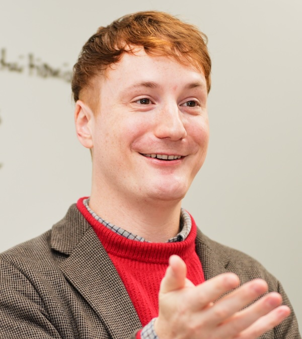

I am an Assistant Professor of Philosophy in the Department of Global and Interdisciplinary Studies (GIS) at Hosei University. I work on ethics broadly construed. My most recent research concentrates on the normative dimensions of love. I am also working on a series of co-authored papers on aesthetic appreciation with Daniel Star. In addition, my research focuses on the history of ethics. I am currently working on several projects on Friedrich Nietzsche, including a book for CUP's Cambridge Elements Series on Nietzsche and Love. I also have an interest in late 19th- and early 20th-century British moral theory.
I grew up in Montana and Wisconsin, where I also did my undergraduate in Philosophy and Classical Studies at St. Norbert College. After graduating, I moved to Tokyo, and I worked as an English teacher for two years at a private company. I decided to go to graduate school in 2015, so I moved back to the U.S. and pursued an M.A. at Georgia State University, where I wrote a Master's Thesis on Nietzsche and Homer under the supervision of Jessica Berry. I then pursued my Ph.D. in philosophy at Boston University, where I worked with Paul Katsafanas. I wrote my dissertation on the philosophy of love. I am now an Assistant Professor of Philosophy at Hosei University as a part of the Department of Global and Interdisciplinary Studies, which is a global liberal arts program located in Tokyo, Japan. I teach on a wide range of topics in value theory and the history of philosophy. My research is generally informed by the history of ethics, especially in the 19th century. I am currently working on several projects within the philosophy of love, including a book on Nietzsche and the philosophy of love with CUP. I am also presently working on several projects related to Henry Sidgwick and the history of utilitarianism. Most recently, I have expanded my work from the philosophy of love to aesthetics, and I am co-authoring a series of papers on this topic with Daniel Star. Outside of academia, I enjoy traveling around Japan with my wife and two kids. I am also an amateur drummer and an expert ramen-enjoyer.